Section 6.7 Objects in Memory: The Stack and the Heap
It is well worth our time now to review the fundamentals of Java memory management, discuss how other languages solve the same problems, and learn the causes of and solutions to several common memory-related bugs. A robust understanding of how a Java program operates behind the scenes will pay dividends: you will write correct code from the start and avoid spending hours chasing memory-related crashes and semantic errors.
Subsection 6.7.1 Memory: Stack, Heap, and Static Area
In Section 1.4, we gave an overview of four areas of memory that a running program maintains: the code segment, the static segment, the stack, and the heap. Your program’s data is stored in the last three: the static segment, the stack, and the heap. It is critical to understand where a piece of data resides so that you know how to compare, copy, and modify it correctly. If you try to compare objects using the equality operators (
== and !=), or if you accidentally declare an instance variable static, your program will behave unpredictably.
Subsubsection 6.7.1.1 The Stack
Each time a method is called, an activation record (or frame) is pushed onto the call stack for that method. That frame contains all of the method’s local variables—both parameters and variables declared within the method body.
The value for each primitive variable is stored directly on the stack. The value for each object variable is either
null (a special literal indicating that no memory address is held) or a memory address pointing to the object’s data in the heap.
When a method finishes executing, its frame is popped from the call stack, destroying all of its local variables. If a method held a reference to an object, that object still exists on the heap, even though the reference was removed from the stack. If there are no other references to the object (for example, if the method created the object and did not return it or store it elsewhere), then the object becomes eligible for garbage collection.
Consider the following method that we add to
PointDemo and invoke with the argument p1, after creating p1 and p2:
public static void memoryExample(Point parameterPoint) {
Point localPoint;
double x = parameterPoint.getX();
double y = parameterPoint.getY();
localPoint = new Point(x, y);
}
When this method is invoked, we can picture memory as shown in Figure 6.16: on the call stack we have frames for
main and memoryExample, each with its own local variables. Both methods hold references pointing to the exact same Point object in the heap (p1 and parameterPoint).
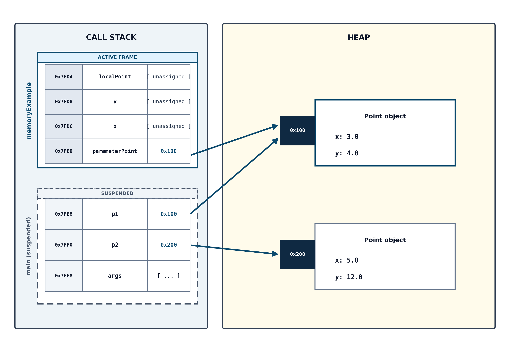
After the last line of the method executes, we can picture memory as shown in Figure 6.17: there is now a third
Point object in the heap, referenced by localPoint, and the local primitive variables x and y hold copied values.
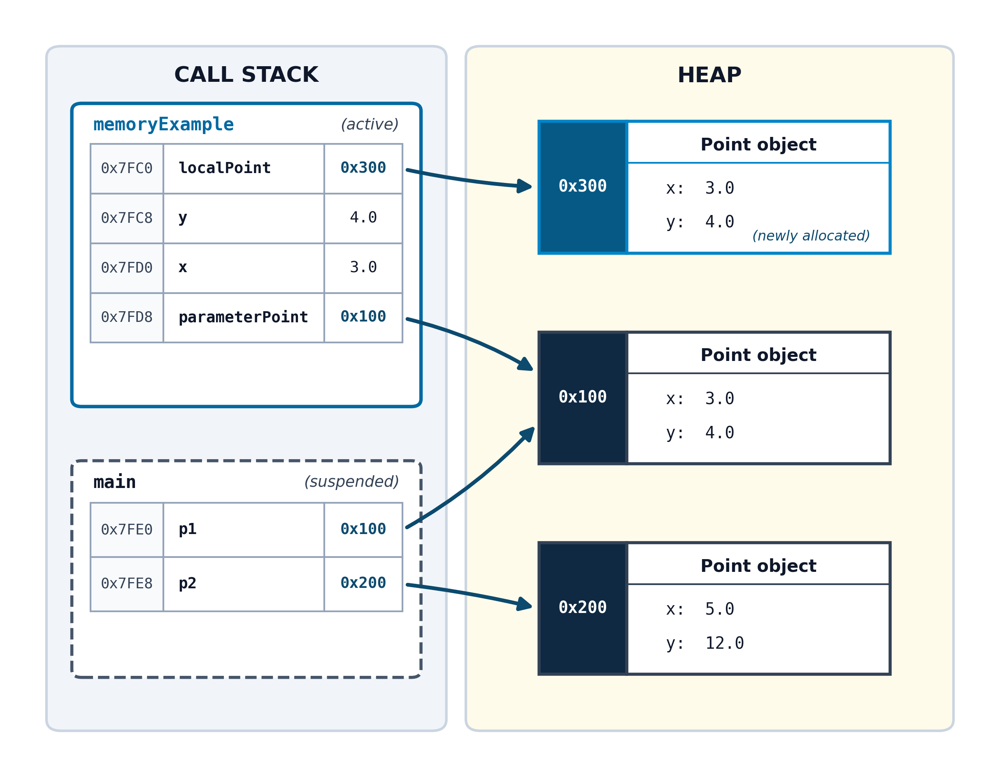
Once
memoryExample finishes executing, its frame is popped from the stack. The local variables x, y, localPoint, and parameterPoint are destroyed. Because p1 in main still references the object at 0x100, that object remains active. However, because the only reference to the third Point object was inside the popped stack frame, the object at address 0x300 is now unreachable—there are no remaining references pointing to it from anywhere in memory. Figure 6.18 illustrates memory after memoryExample returns.
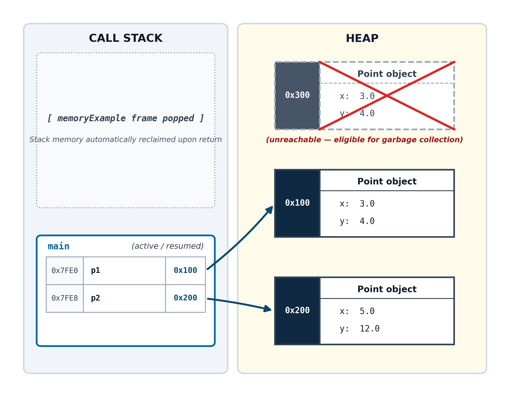
memoryExample returns.Subsubsection 6.7.1.2 The Heap
Each time an object is created with the
new keyword, space is allocated for the object’s data on the heap. (Remember that Java provides shortcut syntax that allows String literals to be created without new, but they are still stored in heap memory.) A reference to the object (its memory address) is placed in the variable that the object is assigned to. If that variable is a local method variable, the reference lives on the stack. An object can also be a field of another object. In that case, the reference is stored inside an object on the heap.
In Figure 6.19, we see an
ElectricVehicle object on the heap. The value of each primitive double field is stored directly within the object’s memory block. Because the model field is a String (which is also an object), that value resides in a separate location on the heap. The value stored within the ElectricVehicle object is a reference—the memory address of that String object.
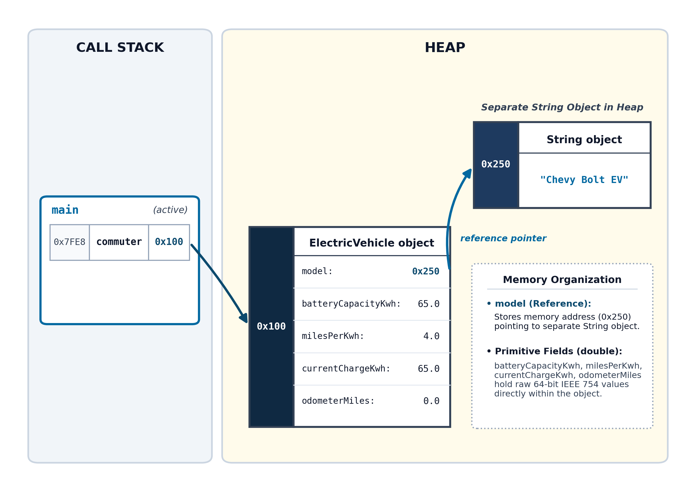
ElectricVehicle object on the heap with composed String reference.Objects stored in the heap remain there until they are removed by the automatic garbage collector that runs periodically within the JVM. An object will only be collected if there are zero active references pointing to it.
Subsubsection 6.7.1.3 The Static Segment
Static fields—fields that are part of a class blueprint and are shared by all instances—are stored in the static memory segment. These variables are allocated when the JVM first encounters a line of code that references the class. Once created, they exist for the entire duration of program execution.
Subsection 6.7.2 Reference Variables and Implicit Dereferencing
Throughout this chapter, we have drawn arrows in our memory diagrams connecting reference variables on the call stack to objects on the heap. But what is an arrow in physical computer hardware?
To understand how Java manipulates objects—and to prepare you for the explicit pointer syntax you will encounter in languages like C and C++—we need to examine what an address actually is and what happens when you use the dot operator (
.).
Subsubsection 6.7.2.1 What a Memory Address Really Is
In physical RAM, every byte of memory has a unique numerical identifier called its memory address. You can think of RAM as an immense row of post office boxes or lockers, numbered sequentially from zero up to the total capacity of your computer’s memory.
When you write:
Point p1 = new Point(3.0, 4.0);
Two distinct operations occur in memory:
-
The
newoperator allocates a block of bytes on the heap to store thePointobject (its object header, itsxfield, and itsyfield), beginning at a specific byte address (such as0x004A1000, which we simplify as0x100in our diagrams). -
The variable
p1is allocated on the call stack. The variablep1does not contain the point’s coordinates3.0and4.0. Instead,p1stores that 64-bit integer address:0x100.
A reference variable is like a piece of paper with someone’s street address written on it. The piece of paper is not the house; it merely tells you where to find the house if you travel to that location.
Subsubsection 6.7.2.2 The Meaning of “Dereferencing”
In computer science, dereferencing means traveling to the memory address stored inside a reference variable to access the actual data located there. It is the formal term for “following the arrow” from the stack to the heap.
In Java, dereferencing is completely implicit (automatic). Whenever you use the dot operator on an object reference, Java performs two distinct operations in a single step:
-
It follows the address: It reads the memory address stored in
p1(0x100) and navigates to that location on the heap. -
It selects the member: It accesses the requested field or invokes the requested method (such as
getX()ortranslate()) belonging to that heap object.
Because the dot operator handles both pointer navigation and member selection simultaneously, Java programmers rarely have to think about raw memory addresses during daily coding.
Subsubsection 6.7.2.3 The C and C++ Connection: Explicit Pointers
In lower-level languages like C and C++, memory is not hidden behind automatic language features. C++ gives programmers direct, manual control over memory, requiring them to choose explicitly how an object is stored:
-
As a direct value:
Point point;allocates the point’s data directly on the stack without using a pointer. -
As a pointer:
Point* p = new Point(3.0, 4.0);creates a pointer variablepthat holds a heap memory address, just like in Java. -
As a reference alias:
Point& ref = point;creates an alternative name for an existing variable.
Because C++ makes this distinction explicit, if you hold a pointer variable
p, you cannot access its members using a simple dot operator. Writing p.getX() in C++ produces a compiler error because p is an address, not an object.
Instead, C and C++ require the programmer to dereference the pointer explicitly using one of two notations:
-
The dereference operator (
*): You must manually follow the address using an asterisk, and then use the dot:(*p).getX(). The parentheses are required because the dot operator has higher precedence than the asterisk. -
The arrow operator (
->): Because(*p).is cumbersome to write, C and C++ provide the arrow operator as shorthand:p->getX(). The arrow operator literally means: “follow this pointer address to the heap, and then select this member.”
Subsubsection 6.7.2.4 Java References Are Pointers with Automatic Dereferencing
When you transition to C++, pointer syntax can feel intimidating at first. However, you already understand how it works because every object variable in Java is secretly a pointer under the hood.
Java’s designers simply decided to eliminate the pointer syntax (
* and ->) to make the language safer and easier to learn. In Java, writing:
p1.getX();
performs the exact same mechanical operation as writing:
p1->getX();
in C++. Recognizing that Java’s dot operator implicitly follows an address to the heap will make learning a language with pointers feel familiar. More importantly, it unlocks the answers to critical memory questions: why assigning one object variable to another does not copy the object, and why calling a method on
null crashes your program.
Subsection 6.7.3 The null Reference and NullPointerException
Listing 6.20 is a
Rectangle class that contains a Point object as a field. Take a moment to read through the class, and then we will examine what null means and how it relates to one of the most common bugs in computing: the NullPointerException.
Rectangle class/**
* Represents a two-dimensional rectangle defined by an anchor Point
* at its top-left corner, a width, and a height.
*/
public class Rectangle {
private Point topLeft;
private double width;
private double height;
/**
* Constructs a new Rectangle with a specified top-left anchor point
* and dimensions.
*
* Precondition: width > 0.0 && height > 0.0
* Postcondition: The rectangle is initialized with the given dimensions,
* and topLeft is initialized at coordinates (x, y).
*
* @param x the x coordinate of the rectangle left
* @param y the y coordinate of the rectangle top
* @param width the horizontal width of the rectangle
* @param height the vertical height of the rectangle
*/
public Rectangle(double x, double y, double width, double height) {
assert width > 0.0 && height > 0.0 : "Dimensions must be positive";
this.topLeft = new Point(x, y);
this.width = width;
this.height = height;
}
/**
* Calculates the distance from the coordinate origin (0.0, 0.0)
* to this rectangle's top-left corner by delegating to the Point object.
*
* Precondition: topLeft != null
* Postcondition: Returns the Euclidean distance from (0, 0) to top-left.
*
* @return the distance from (0.0, 0.0) to the top-left corner
*/
public double distanceFromOrigin() {
assert this.topLeft != null : "Cannot calc distance: top-left point is null";
return this.topLeft.distanceFromOrigin();
}
/**
* Moves the rectangle to a new top-left anchor position.
*
* Precondition: None
* Postcondition: The rectangle's top-left corner is a new Point at (x, y);
* width and height are unchanged.
*
* @param x the x coordinate of the rectangle left
* @param y the y coordinate of the rectangle top
*/
public void moveTo(double x, double y) {
this.topLeft = new Point(x, y);
}
/**
* Returns the current top-left anchor Point.
*
* @return the top-left corner Point reference
*/
public Point getTopLeft() {
return this.topLeft;
}
}
A
Rectangle object is composed of a width and height (double), and a Point object that establishes its position. There is one constructor that initializes the width and height, and initializes topLeft by instantiating a new Point from the x and y arguments. There is one mutator—moveTo—that creates a new Point at new coordinates and assigns it to topLeft. There are two accessors: getTopLeft, and distanceFromOrigin, which delegates the distance calculation directly to the composed Point:
return this.topLeft.distanceFromOrigin();
RectangleDemo classpublic class RectangleDemo {
public static void main(String[] args) {
// Creates a Rectangle and prints its distance from the origin.
Rectangle rect1 = new Rectangle(3.0, 4.0, 10.0, 20.0);
System.out.println(rect1.distanceFromOrigin());
// Moves it and prints its distance from the origin.
rect1.moveTo(5.0, 12.0);
System.out.println(rect1.distanceFromOrigin());
}
}
This program displays the rectangle’s distance from the origin after construction and after moving, producing the following output:
5.0 13.0
Figure 6.22 visualizes the stack and heap after line 4 executes. You can see a reference in
main on the stack pointing to the Rectangle object rect1 on the heap. The Rectangle object on the heap references a Point object for its topLeft field.
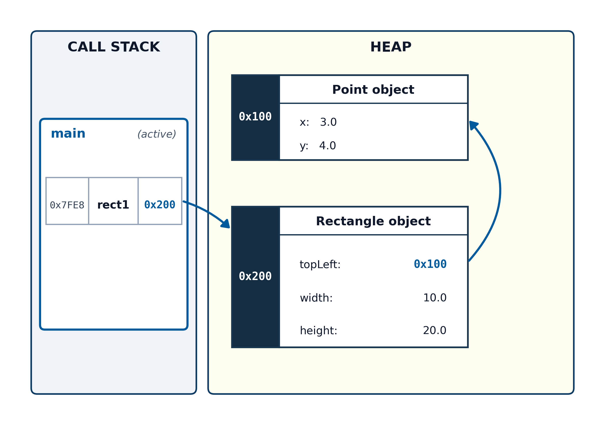
RectangleDemo.main executes.After line 8 executes, the
Rectangle object’s topLeft field references a new Point object at address 0x200. Because the original Point at 0x100 no longer has any references pointing to it, it is marked for garbage collection, as illustrated in Figure 6.23.
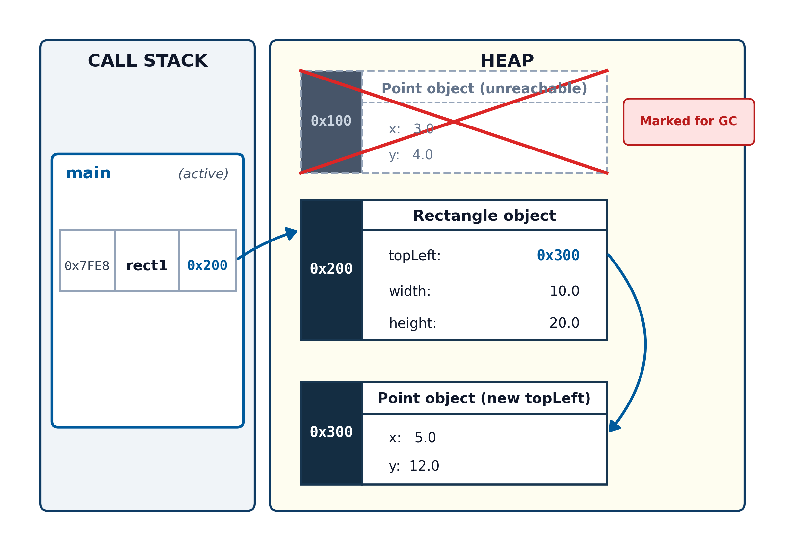
moveTo and garbage collection).As we discussed in Section 6.6.1, when an object is created, its fields are initialized to default values. There is a special keyword for an unassigned object reference:
null. It means the reference variable does not point to any object at all. In our Rectangle class, it makes no sense for the Point field to be null, so we initialize it in the constructor and ensure it is never set to null.
For some classes, an object reference may legitimately be
null if it represents an optional component. For example, a Name class might have an optional middleName field. In methods that use that field, the programmer must verify that the reference is not null before dereferencing it:
// Safe defensive check before dereferencing:
if (this.middleName != null) {
System.out.println("Middle initial: " + this.middleName.charAt(0));
}
A
null reference cannot be dereferenced—the JVM cannot follow a null address to an object on the heap because no object exists there. If we attempt to use the dot operator on a null reference, the JVM throws a NullPointerException.
Suppose we make the common mistake of forgetting to initialize
topLeft in our constructor:
// Buggy constructor: forgot to initialize topLeft!
public Rectangle(double width, double height) {
this.width = width;
this.height = height;
}
The
topLeft field would retain the zeroed-out null value assigned to it when memory was allocated on the heap. Figure 6.24 depicts memory after this modified constructor executes.
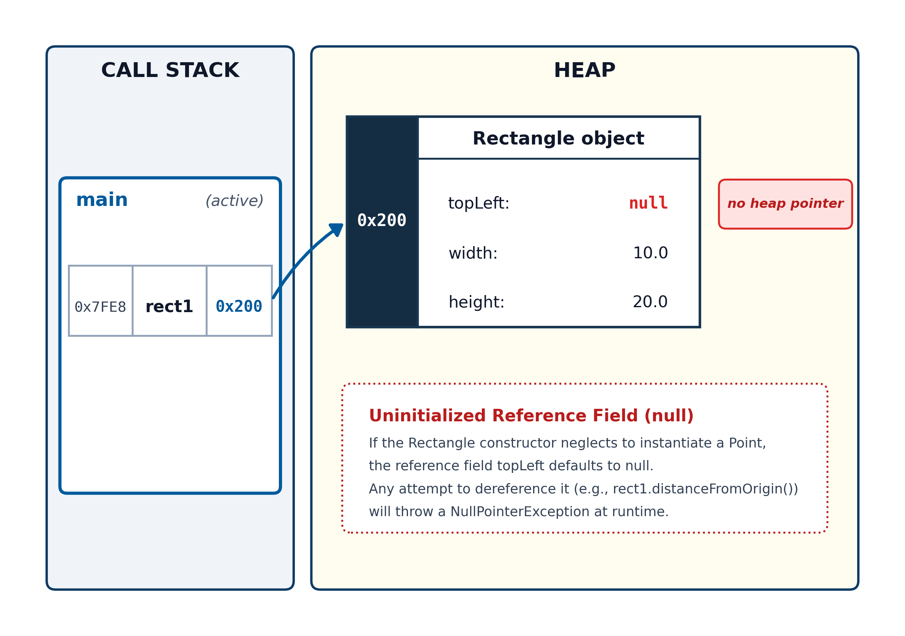
topLeft as null.If we run with assertions disabled, or if we omit our defensive assertion, attempting to invoke
rect1.distanceFromOrigin() causes Java to throw an immediate exception:
Exception in thread "main" java.lang.NullPointerException: Cannot invoke "Point.distanceFromOrigin()" because "this.topLeft" is null
at Rectangle.distanceFromOrigin(Rectangle.java:42)
at RectangleDemo.main(RectangleDemo.java:5)
Line 42 of
Rectangle.java attempts to invoke distanceFromOrigin on topLeft, but topLeft contains null. Because null is not an object, the JVM halts with a NullPointerException.
Subsection 6.7.4 Object Aliasing: Assignment (=) and Method Arguments
Subsubsection 6.7.4.1 What Pass-by-Value Means with Objects
In Section 6.7.1.1, we saw a method that accepted a
Point object as a parameter:
public static void memoryExample(Point parameterPoint) {
...
}
When we invoke a method, Java evaluates the arguments and copies their values directly into the matching parameter variables on the call stack. For primitive types, this copies the raw data (such as an
int or a double). For reference types, Java follows the exact same rule: the value stored in the argument variable is copied directly into the parameter variable on the stack. However, because the value stored in an object variable is a memory address, what gets copied is that reference—not the object’s data. The object itself remains on the heap.
The implications are profound: while reassigning a primitive parameter variable has no effect on the caller, invoking a mutator method through a reference parameter directly modifies the object on the heap.
Suppose we add the following
reflectPoint method to PointDemo.java:
/**
* Reflects the point across the y axis.
* Precondition: p != null
* Postcondition: p.getX() == -old(p.getX()) && p.getY() == old(p.getY())
*
* @param p The Point to reflect.
*/
public static void reflectPoint(Point p) {
assert p != null : "A nonexistent point cannot be reflected.";
p.translate(-2 * p.getX(), 0);
}
And suppose we invoke
reflectPoint(p1) in main:
Point p1 = new Point(3.0, 4.0);
Point p2 = new Point(5.0, 12.0);
reflectPoint(p1);
The
reflectPoint method receives a copy of the address stored in p1. Both p1 in main’s frame and p in reflectPoint’s frame reference the exact same heap memory block. When reflectPoint calls p.translate(-6.0, 0), Java follows the pointer to the heap and updates x from 3.0 to -3.0 directly in heap memory. Figure 6.25 illustrates memory after the translate method is invoked inside reflectPoint.
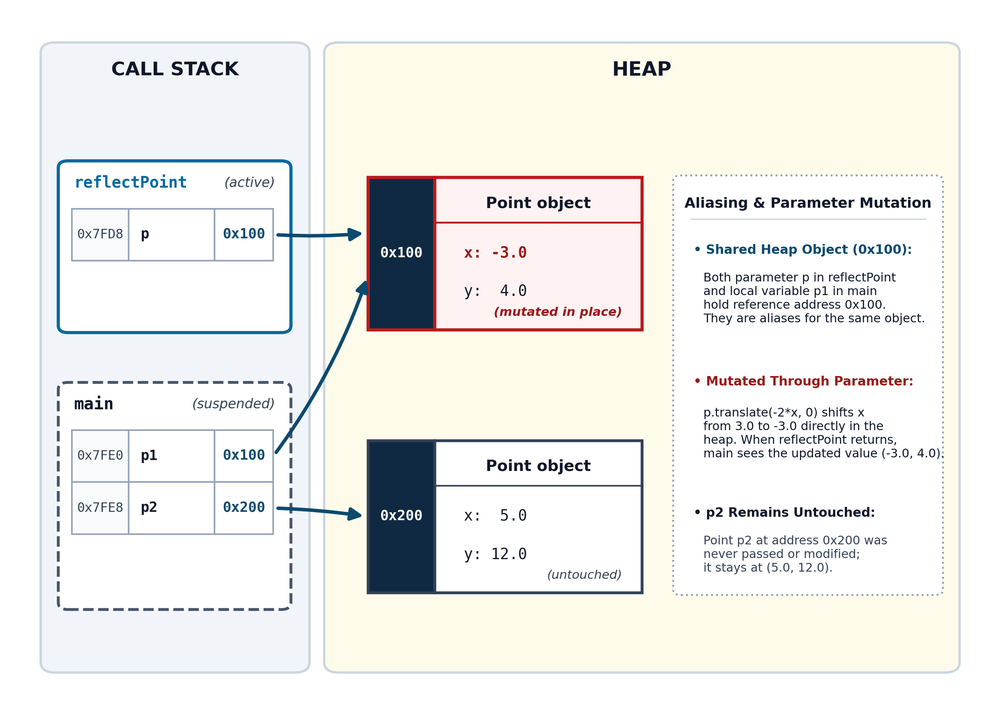
reflectPoint mutates the object referenced by p1.This may initially feel like a violation of pass-by-value. Pass-by-value guarantees that the caller’s reference variable cannot be redirected to point to a different object.
To see this, suppose we wrote a flawed version,
badReflectPoint, attempting to create a new reflected object rather than mutating the existing one:
public static void badReflectPoint(Point p) {
// Reassigns the LOCAL parameter p to a new heap object;
// does NOT change p1 in main!
assert p != null : "A nonexistent point cannot be reflected.";
p = new Point(-p.getX(), p.getY());
}
When
badReflectPoint(p1) executes, the parameter variable p initially receives a reference to the object at 0x100. But the method then allocates a new Point object and assigns that new memory address to p. This assignment updates only the local parameter in badReflectPoint’s stack frame. It has zero impact on p1 in main, which still references the original object at 0x100. Figure 6.26 illustrates memory after p is reassigned.
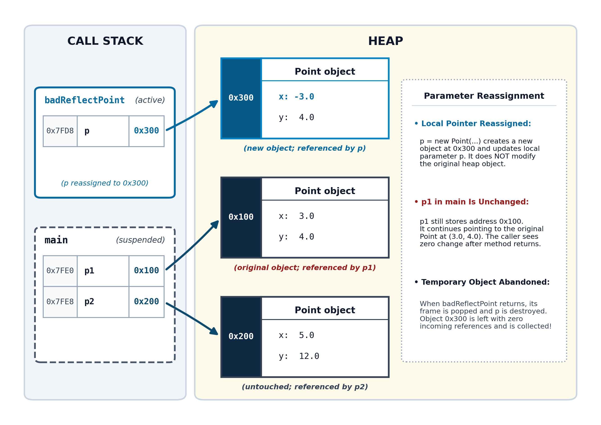
badReflectPoint reassigns its local parameter.When
badReflectPoint returns, its stack frame is popped, destroying local variable p. Because no other reference points to the newly allocated object at 0x300, that object is immediately abandoned for garbage collection, while p1 in main remains at \((3.0, 4.0)\text{,}\) completely unaffected.
Subsubsection 6.7.4.2 Object Aliasing Through the Assignment Operator
The exact same phenomenon occurs within a single stack frame whenever we use the assignment operator (
=) with reference variables.
When working with primitive types, copying duplicates the raw value:
int score1 = 100;
int score2 = score1; // Copies the integer 100 into score2
score2 = 85; // Overwrites score2 with 85
System.out.println(score1); // Still prints 100
When working with reference variables, Java follows the exact same mechanical rule: it copies the value from the right-hand side into the container on the left-hand side. But the value stored in a reference variable is a memory address:
Point p1 = new Point(3.0, 4.0);
Point p3 = p1; // Copies the address stored in p1 into p3
Line 2 does not invoke
new, and it does not manufacture a second Point object. There is still only one Point object in the heap. We now have two distinct variables on the call stack—p1 and p3—that both hold the address 0x100. When two or more reference variables store the same memory address, they are called aliases. Figure 6.27 shows memory after this assignment executes.
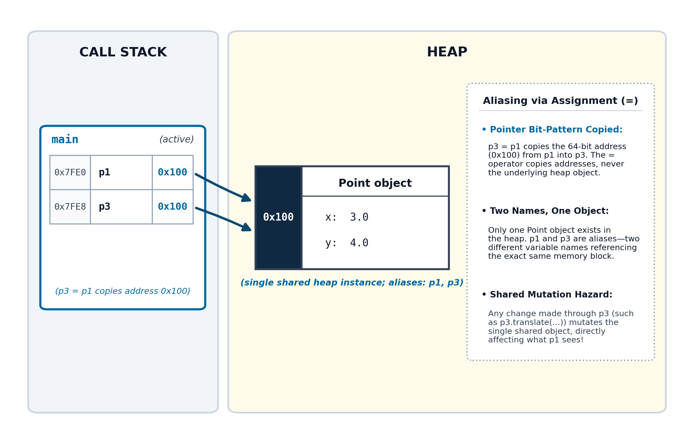
=) creates an alias.Because both variables point to the same physical memory on the heap, any mutator method called through either alias modifies the shared object:
p3.translate(1.0, 2.0); // Shifts the object at 0x100 by (1.0, 2.0)
System.out.println(p3.getX()); // Prints 4.0
System.out.println(p1.getX()); // Prints 4.0!
Understanding that reference variables hold memory addresses also clears up another common point of confusion: the equality operator (
==). When applied to reference variables, == compares the memory addresses stored in the variables, not the data stored inside the heap objects:
Point p1 = new Point(3.0, 4.0);
Point p2 = new Point(3.0, 4.0);
Point p3 = p1;
System.out.println(p1 == p3); // true (both hold address 0x100; they are aliases)
System.out.println(p1 == p2); // false (0x100 != 0x200; they are distinct objects!)
Even though
p1 and p2 have identical coordinate fields \((3.0, 4.0)\text{,}\) they reside in separate heap allocations. Because 0x100 != 0x200, p1 == p2 evaluates to false.
Subsection 6.7.5 True Object Duplication: The Copy Constructor
If the assignment operator cannot duplicate an object, how do we create an independent copy of data in the heap?
Duplicating an object requires resolving critical design questions: should composed objects be shared (a shallow copy), or should new independent objects be allocated (a deep copy)? Because these decisions depend on the class design and invariants, Java places control in the hands of the class author through a specialized pattern: the copy constructor.
Subsubsection 6.7.5.1 Copy Constructor Fundamentals
A copy constructor is a constructor that takes a single parameter of its own class type and constructs an independent duplicate on the heap.
Let’s add a copy constructor to the
Point class:
/**
* Constructs a new Point with the same coordinates as an existing Point.
*
* Precondition: toCopy != null
*
* @param toCopy the Point object to copy
*/
public Point(Point toCopy) {
assert toCopy != null : "Cannot copy a null Point";
this(toCopy.x, toCopy.y);
}
Here we follow the constructor chaining pattern, invoking the primary two-parameter constructor from within the copy constructor. Within a class definition, Java allows direct access to the private fields of another object of the same class (such as
toCopy.x and toCopy.y).
Code in
main that invokes the copy constructor:
Point p1 = new Point(3.0, 4.0);
Point p2 = new Point(5.0, 12.0);
Point p3 = new Point(p1);
Figure 6.28 illustrates memory after this code executes.
p1 and p3 have identical coordinates, but reside in distinct heap allocations.
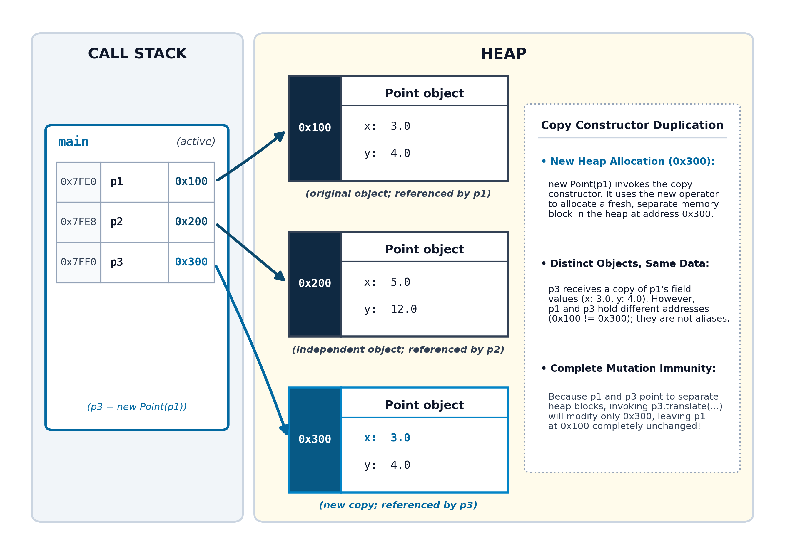
Subsubsection 6.7.5.2 Shallow vs. Deep Copying
A
Rectangle object is composed of primitive fields (width and height) and an object reference (Point topLeft). If we write a copy constructor that simply copies field values directly, we make a shallow copy:
// Shallow copy constructor: copies references!
public Rectangle(Rectangle toCopy) {
assert toCopy != null : "Cannot copy a null Rectangle.";
this.topLeft = toCopy.topLeft;
this.width = toCopy.width;
this.height = toCopy.height;
}
In a shallow copy, the new object has its own primitive fields, but reference fields become aliases to the composed objects of the original instance, as shown in Figure 6.29. If one rectangle moves its
topLeft point, the other rectangle is unintentionally moved as well!
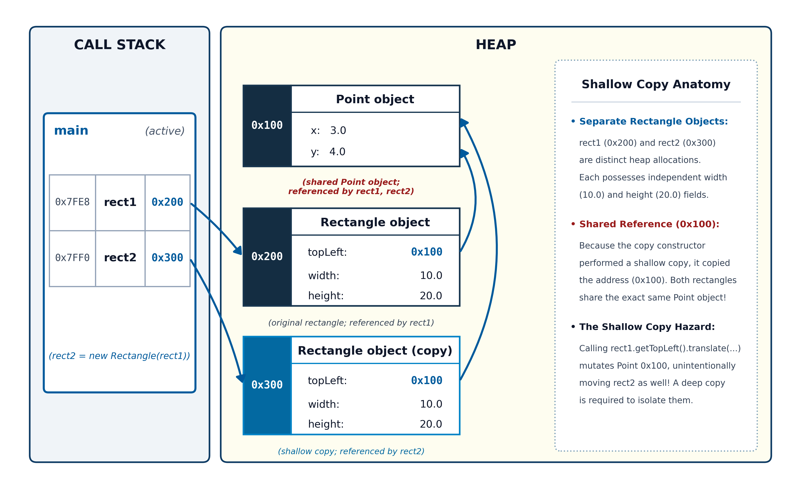
Rectangle sharing a single Point object.Making a deep copy eliminates this shared-reference side effect. To make a deep copy, we allocate a brand-new
Point object with the same coordinates, ensuring both primitive and reference fields are completely independent:
/**
* Constructs a new Rectangle that is a deep copy of the parameter.
*
* Precondition: toCopy != null && toCopy.topLeft != null
* Postcondition: this.width == toCopy.width &&
* this.height == toCopy.height &&
* this.topLeft.getX() == toCopy.topLeft.getX() &&
* this.topLeft.getY() == toCopy.topLeft.getY() &&
* this.topLeft != toCopy.topLeft
*
* @param toCopy The other Rectangle to copy.
*/
public Rectangle(Rectangle toCopy) {
assert toCopy != null && toCopy.topLeft != null :
"Cannot copy a null Rectangle or a Rectangle with a null Point.";
this(toCopy.topLeft.getX(), toCopy.topLeft.getY(), toCopy.width, toCopy.height);
}
Figure 6.30 illustrates memory when using a deep copy constructor. Both rectangles are now completely isolated.
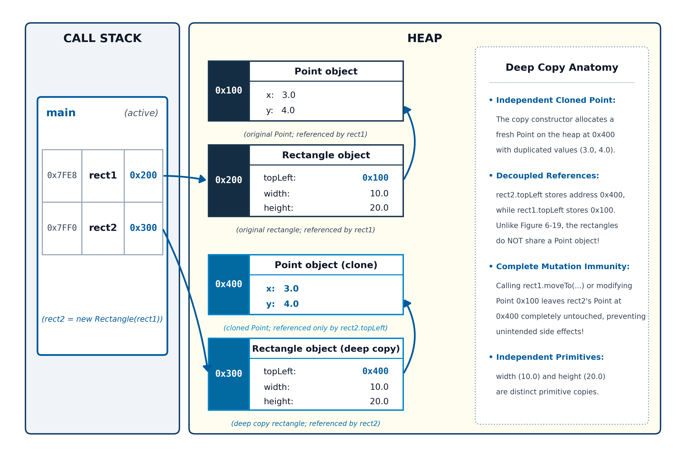
Rectangle with completely independent composed objects.Subsection 6.7.6 Object Lifetime and Automatic Garbage Collection
When a local variable goes out of scope on the stack, its lifetime ends immediately and its memory is reclaimed by the CPU. But heap memory does not have a scope tied to curly braces (
{ }). An object on the heap can outlive the method that instantiated it—as long as some variable somewhere in the program still holds its address.
Subsubsection 6.7.6.1 The Definition of “Unreachable”
Java determines the end of an object’s lifetime through reachability. An object is considered reachable if your running program can still access it by following active reference variables beginning from:
-
Local variables currently sitting on the call stack in any active method frame.
-
Static reference fields belonging to loaded classes in the static segment.
An object becomes unreachable the moment there is no longer any valid chain of references leading to it. Once unreachable, a program can never access or inspect it again.
Subsubsection 6.7.6.2 The Garbage Collector: The JVM’s Automated Cleanup Crew
In low-level languages like C and C++, allocating memory requires the programmer to manually release it when finished:
// In C++: Manual memory management
Point* ptr = new Point(3.0, 4.0); // Programmer manually allocates
delete ptr; // Programmer must remember to manually free!
Manual memory management places a heavy cognitive burden on the developer, giving rise to two notorious categories of software bugs:
-
Memory Leaks: If a programmer forgets to call
delete, the abandoned object remains in RAM indefinitely. Over time, the application consumes all available memory until the operating system forcibly terminates it. -
Dangling Pointers and Segmentation Faults: If a programmer calls
deletetoo early while another part of the program is still using that memory address, the remaining reference becomes a dangling pointer. Attempting to use a dangling pointer causes data corruption, security exploits, or crashes.
Java was deliberately designed to eliminate these errors by employing an automated runtime background service known as the Garbage Collector (GC).
The JVM continuously monitors the heap behind the scenes. When the garbage collector detects that an object has zero active references pointing to it, it marks the object as unreachable (as illustrated with the red cross in Figure 6.18) and reclaims that memory block so it can be reused for future
new expressions.
![Runestone Academy logo]()
![MathJax logo]()